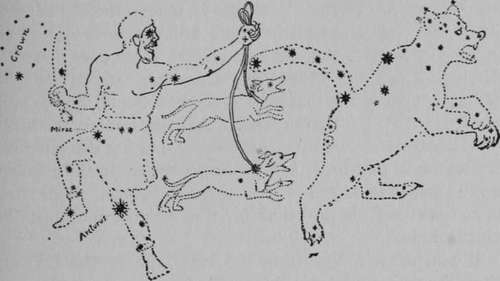
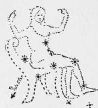
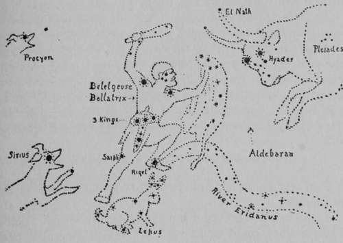

Hiking In The Snow. Part 3
Description
This section is from the book "The Book Of Woodcraft", by Ernest Thompson Seton. Also available from Amazon: The Book of Woodcraft.
Hiking In The Snow. Part 3
It is no doubt, because it is so conspicuous, that the Great Bear is the oldest of all the constellations, in a human historical sense. Although it has no resemblance to a Bear, the tail part has obvious resemblance to a Dipper, by which name it is known to most Americans. Therefore, because so well known, so easily pointed out, and so helpful in pointing out the other stars, this Dipper will be our starting point and shall prove our Key to the whole sky.
If you do not know the Dipper, get some one who does to point it out; or look in the northern sky for the shape shown in cut, remembering that it goes around the Pole Star every twenty-four hours, so that at different times it is seen at different places.
Having found the Dipper, note carefully the two stars marked b and a; these, the outer rim of the Dipper bowl are called the Pointers, because they point to, or nearly to, the Pole Star; the latter being about three dipper rims (a d) away from the Dipper.
Now, we have found the great Pole Star, which is called by Indians the "Star that never moves" and the "Home Star." Note that it is in the end of the handle of a Little Dipper, or, as it is called, the Little Bear, Ursa minor; this Bear, evidently, of an extinct race, as bears, nowadays, are not allowed such tails.
Now, let us take another view of the Dipper. Its handle is really the tail of the Great Bear, also of the extinct long-tailed race. (cut 2.) Note that it is composed of seven stars, hence its name, "The Seven Stars." Four of these are in the bowl and three in the handle; the handle is bent at the middle star, and this one is called Mizar. Just above Mizar is a tiny star called Alcor. Can you see Alcor? In all ages it has been considered a test of good eyesight to see this little star, even among the Indians. They call the big one the Old Squaw, and the little one the "pappoose on her back." Keep this in mind as a test. Can you see the pappoose?
If I give you the Latin names of the stars and the scientific theories as to their densities and relations, you certainly will not carry much of it away. But let us see if the old animal stories of the sky are not a help.
In cut No. 2 of the Great Bear Hunt, for instance, you see the Dipper in the tail of the long-tailed Bear; and not only is this creature hunted, but in many other troubles. Thus, there is a swarm of flies buzzing about his ear, and another on his flank below b of the Dipper. These swarms are really nebulae or clusters of very small stars.
Close below the Bear are two Hounds of Bootes in leash and in full pursuit of Ursa. They also have annoyances, for there is a swarm of flies at the ear of each. On Ursa's haunch are two areas that, according to the star maps, belong to the Hounds, so we must consider them the bites the hounds are going to take out.
Last, and leading, is the great hunter "Bootes." If you follow the Dipper, that is, the Bear's tail, in a curve for a circle of jewels with one very large one in the middle of the string. The Indians call it the Camp Circle of the Gods.
cut 2. bootes hunting the great bear.
If you draw a line from the back rim of the Dipper through Mizar, that is, the star at the bend of the handle, and continue about the total length of the Dipper, it will touch the Crown.
The step from the Crown to the Cross is natural, and is easy in the sky. If you draw a line up- ward from the middle of the Dipper bowl, straight across the sky, about three total Dipper lengths, until it meets the Milky Way, you reach the Northern Cross, which is also called Cygnus, the northern cross the length of two tails, it will bring you to Arcturus, the wonderful star that the Bear hunter wears like a blazing jewel in his knee.
Just above the head of Bootes is another well-known constellation, the Northern Crown. (Corona borealis.) This very small and very beautiful star-group has been called the "Diamond Necklace in the sky." because it looks like Swan. You note it is on the opposite side of the Pole Star from the Dipper, and about one and a half Dipper lengths from the Pole.
One more easily known group is now in sight, that is, Cassiopeia in her chair. It is exactly opposite the Big Dipper on the other side of the Pole Star, and about as far from the latter as the Big Dipper is, that is, the Big Dipper and Cassiopeia balance each other; as the one goes up, the other goes down.
CASSIOPEIA.
There is yet another famous constellation that every one should know; and that is " Orion, the great hunter, the Bullfighter in the sky." During the summer, it goes on in day-time, but in winter it rises in the evening and passes over at the best of times to be seen. February is a particularly happy time for this wonder and splendor of the blue.
If you draw a line from the inner rim of the Dipper, through the outer edge of the bottom, and continue it about two and a half total lengths of the Dipper, it will lead to the Star "Procyon" the "Little Dogstar," the principal light of the constellation Canis minor. Below it, that is, rising later, is Sirius the "Great Dogstar," chief of the Constellation Canis major, and the most wonderful star in the sky. It is really seventy times as brilliant as the Sun, but so far away from us, that if the Sun's distance (92,000,000 miles) be represented by one inch, the distance of Sirius would be represented by eight miles; and yet it is one of the nearest of the stars in the sky. If you see a star that seems bigger or brighter than Sirius, you may know it is not a star, but a planet, either Venus, Jupiter or Mars.
Having located the Dogstar, it is easy to go farther to the southward, and recognize the Great Hunter Orion. The three Kings on his belt are among the most striking of all the famous stars in our blue dome. And, having found them, it is easy to trace the form of the Giant by the bright stars, Betelgeuse (orange), in his right shoulder, and Bella-trix in his left, Saiph in his right knee, and Rigel in his left foot. In his left hand he shakes the lion skin to baffle the bull while his right swings the mighty club that seems already to have landed on the bull's head, for the huge creature's face is spotted all over with star-groups called the "Hyades." The wonderful red star, Aldebaran, is the Bull's right eye and the Pleiades are the arrow wounds in the Bull's shoulder.
ORION.
Serviss tells us that the Pleiades have a supposed connection with the Great Pyramid, because "about 2170 B. C., when the beginning of spring coincided with the culmination of the Pleiades at midnight, that wonderful group of stars was visible just at midnight, through the mysterious southward-pointing passage of the Pyramid".
Out of Orion's left foot runs the River Eridanus, to wander over the sky; and, crouching-for protection at the right foot of the Great Hunter, is Lepus the Hare.
Now, how many constellations have you learned? In the Indian Scouts you need ten. Ten sounds hard, but here you have already got seventeen, and I think will have little trouble in remembering them.
And why should you do so? There are many reasons, and here is one that alone would, I think, make it worth while:
An artist friend said to me once: "I am glad I learned the principal star groups when I was young. For my life has been one of wandering in far countries, yet, wherever I went, I could always look up and see something familiar and friendly, something that I knew in the dear bygone days of my boyhood's home, and something to guide me still".
Continue to:
Tags
bookdome.com, books, online, free, old, antique, new, read, browse, download